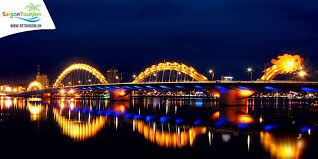

1. Vịnh Hạ Long
Vịnh Hạ Long nổi tiếng với hàng nghìn đảo đá vôi và hang động kỳ thú. Nơi đây được UNESCO công nhận là di sản thiên nhiên thế giới.
2. Cố đô Huế
Huế là cố đô của Việt Nam, nổi bật với quần thể di tích cố đô và các lăng tẩm vua chúa triều Nguyễn.
3. Đà Nẵng
Đà Nẵng là thành phố biển hiện đại, nổi tiếng với bãi biển Mỹ Khê, Bà Nà Hills và Cầu Rồng độc đáo.
Danh sách những hoạt động bạn nên thử
- Đi thuyền tham quan Vịnh Hạ Long
- Khám phá lăng tẩm ở Huế
- Tắm biển và thưởng thức hải sản ở Đà Nẵng
Tham khảo thêm thông tin về du lịch Việt Nam tại Vietnam Tourism.